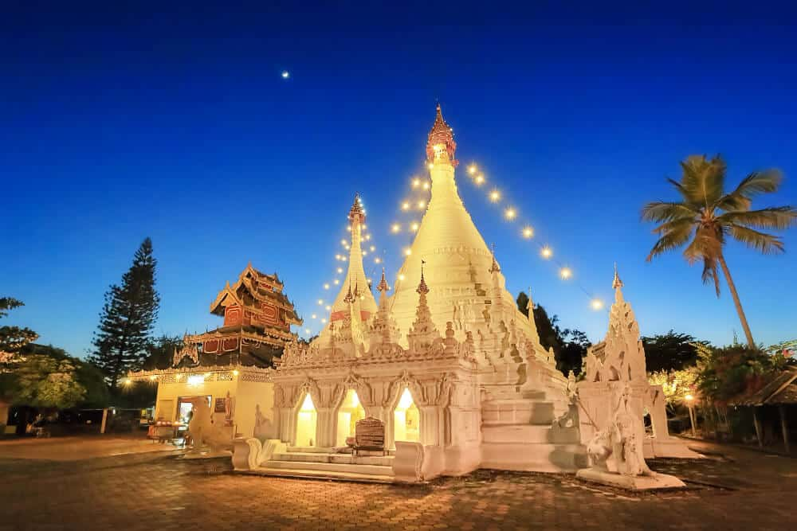

แนะนำสถานที่ท่องเที่ยว
สะพานซูตองเป้

"สะพานไม้ซูตองเป้" ชื่อนี้อาจจะเป็นที่คุ้นหูของใครหลายๆ คน คำว่าซูตองเป้เป็นภาษาไทยใหญ่แปลว่าอธิษฐานสำเร็จ หรือบางคนก็บอกว่าแปลว่า ความสำเร็จ โดยประวัติความเป็นมาของสะพานซูตองเป้นั้น สร้างขึ้นจากความร่วมมือร่วมใจกันของพระภิกษุสงฆ์และชาวบ้านในหมู่บ้านกุงไม้สักที่ช่วยกันสานไม้ไผ่เป็นแผ่นทอดยาว ข้ามทุ่งนาที่เจ้าของที่อุทิศผืนนาถวายให้แก่วัด กลายเป็นสะพานไม้ไผ่เชื่อมต่อระหว่างหมู่บ้านกุงไม้สักและสวนธรรมภูสมะ มีขนาดความกว้าง 2 เมตร ยาวประมาณ 500 เมตร
- ที่อยู่ : บ้านกุงไม้สัก อำเภอเมือง จังหวัดแม่ฮ่องสอน
- พิกัด : https://goo.gl/maps/bD4kCVQRVXtVwDTj7
- เปิดให้เข้าชม : สามารถเที่ยวชมได้ตลอดทั้งวัน
- โทร : -
- เว็บไซต์ : https://www.facebook.com/ซูตองเป้
ปางอุ๋ง

ปางอุ๋ง ที่ใครๆ ต่างขนานนามให้เป็นสวิตเซอร์แลนด์เมืองไทย ดูจะไม่ใช่คำกล่าวที่เกินจริง ด้วยความงามของทิวสนลำต้นสูงใหญ่ รายล้อมรอบอ่างเก็บน้ำที่สงบนิ่ง อากาศที่เย็นสบายตลอดทั้งปี และเหล่าหงส์ที่ว่ายน้ำคลอเคลียกันไม่ห่าง ทั้งหมดนี้คุณสามารถพบเห็นได้เพียงเดินทางจากตัวเมืองแม่ฮ่องสอนประมาณ 2 ชั่วโมง
- ที่อยู่ : บ้านรวมไทย ตำบลหมอกจำแป่ อำเภอเมือง จังหวัดแม่ฮ่องสอน
- พิกัด : https://goo.gl/maps/j5nyEK8ayMUhWyu6A
- เปิดให้เข้าชม : สามารถเที่ยวชมได้ตลอดทั้งวัน
- โทร : -
- เว็บไซต์ : -
สวนธรรมภูสมะ
หลายๆ คนน่าจะเคยเห็นภาพของทางเดินสะพานไม้ไผ่ ซูตองเป้ จังหวัดแม่ฮ่องสอน ที่ทอดตัวยาวไปตามทุ่งนากว้าง และยิ่งสวยงามเป็นพิเศษในช่วงฤดูทำนา เป็นที่ถ่ายรูปยอดนิยมของนักท่องเที่ยวที่แวะเวียนกันมาไม่ขาดสาย แต่สำหรับชาวบ้านกุงไม้สักแล้ว ที่นี่นับเป็นศูนย์รวมแห่งศรัทธาที่สร้างจากน้ำพักน้ำแรงล้วนๆ เพื่อใช้เป็นทางสัญจรไปสู่ สวนธรรมภูสมะ พุทธศาสนอันแสนวิเวกที่ควรลองเข้าไปสัมผัสสักครั้งครับ
- ที่อยู่ : บ้านกุงไม้สัก หมู่ 2 ตำบลปางหมู อำเภอเมือง จังหวัดแม่ฮ่องสอน
- พิกัด : https://goo.gl/maps/E5t5UXok8qsNpTvo8
- เปิดให้เข้าชม : 06.00-18.00 น.
- โทร : 08-4372-3446
- เว็บไซต์ : https://www.facebook.com/ซูตองเป้
พระธาตุดอยกองมู
พระธาตุดอยกองมู วัดพระธาตุดอยกองมู ที่เที่ยวแม่ฮ่องสอน เป็นวัดศักดิ์สิทธิ์คู่บ้านคู่เมืองของชาวจังหวัดแม่ฮ่องสอนมาช้านาน ลักษณะเป็น พระธาตุสีขาวล้วนองค์ใหญ่ สวยงามมากๆ ด้านในประกอบด้วยพระธาตุเจดีย์ 2 องค์ โดยองค์ใหญ่ (จองตองสู่) เป็นที่บรรจุพระธาตุของ พระโมคคัลลานะเถระ ซึ่งนำมาจากพม่า ส่วนพระธาตุองค์เล็กสร้างโดยพระยาสิงหนาทราชา เจ้าเมืองแม่ฮ่องสอนคนแรก ชาวบ้านจึงเคารพและนับถือเป็นพระธาตุคู่เมืองแม่ฮ่องสอน มาตั้งแต่ครั้งโบราณ
- ที่อยู่ : ตำบลจองคำ อำเภอเมืองแม่ฮ่องสอน จังหวัดแม่ฮ่องสอน
- พิกัด : https://goo.gl/maps/Gh8FxQSsELJT3EeSA
- เปิดให้เข้าชม : 06.00-18.00 น.
- โทร : 0-5361-1221
- เว็บไซต์ : https://www.facebook.com/kongmu.temple
ทุ่งดอกบัวตอง
ดอกบัวตองนั้นงามอยู่บนยอดดอยและดอกบัวตองงามๆ คอยเราอยู่ที่ดอยแม่อูคอ อยู่ที่อำเภอขุนยวม แม่ฮ่องสอน เราจะเห็นดอกบัวตองสีเหลืองอร่ามทั่วภูเขาทั้งลูก บนพื้นที่กว่า 500 ไร่ ถือเป็นทุ่งดอกบัวตองที่ใหญ่ที่สุดในประเทศไทย จะยิ่งใหญ่อลังการแค่ไหนต้องไปชมให้เห็นกับตา ใครจะไปชมต้องไปช่วงหน้าหนาวประมาณเดือน พฤศจิกายน-ธันวาคม ซึ่งก็จะเป็นช่วงที่ดอกบัวตองเริ่มบานสวย ทั้งนี้ก็ขึ้นอยู่กับสภาพอากาศในเวลานั้นด้วยว่าปีไหนจะเริ่มบานช้าบานเร็ว
- ที่อยู่ : ตำบลแม่อูคอ อำเภอขุนยวม จังหวัดแม่ฮ่องสอน
- พิกัด : https://goo.gl/maps/dmypk7oiSVyJgyxP6
- เปิดให้เข้าชม : ช่วงเดือนพฤศจิกายน-ธันวาคม ของทุกปี
- โทร : -
- เว็บไซต์ : -